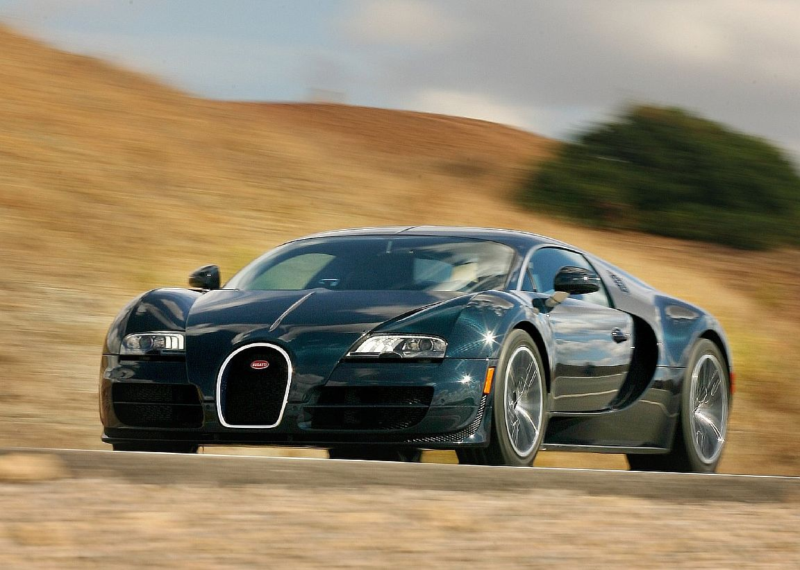
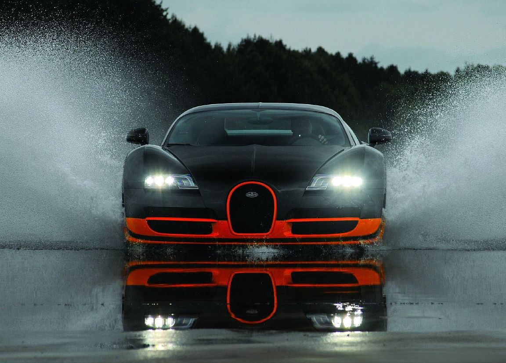
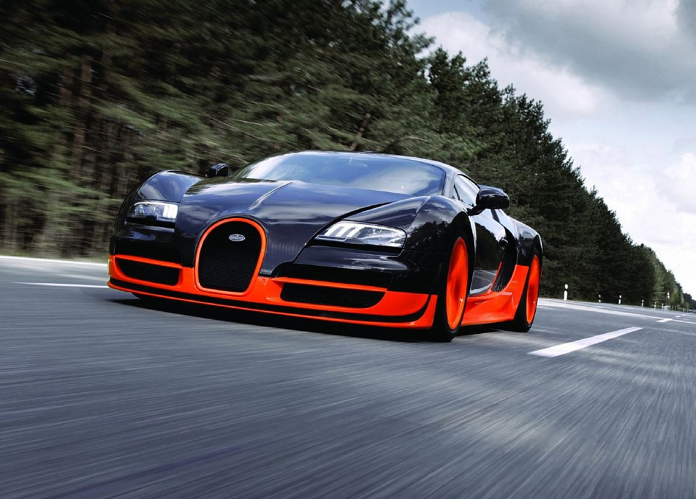
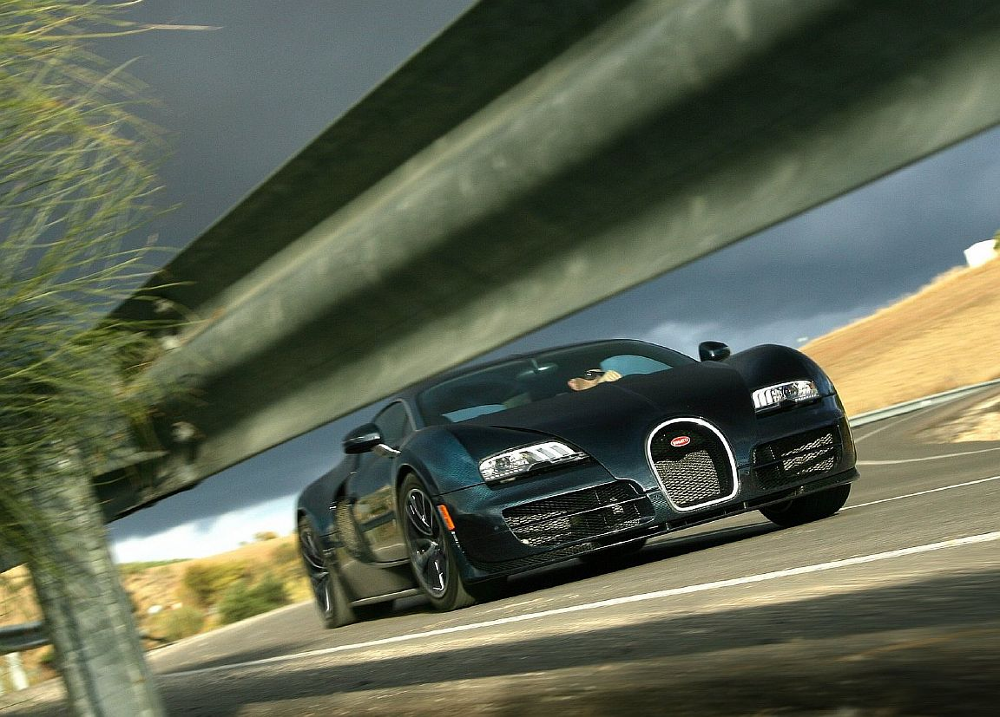

Mon, 25'th of Jully
Bugatti Veyron Super Sport - эта модель является последней в серии Bugatti. Созданием этой модели мы благодарны многократным просьбам клиентов, которые хотели обзавестись необычной, лимитированой версией с еще большей динамичностью!  Bugatti Veyron Super Sport мощнее предыдущей версии на 199 лошадиных сил и уже имеет мощность в 1200 л.с. а не 1001. А крутящий момент достиг отметки в 1500Нм. Мод капотом Super Sport инженеры Bugatti установили силовой агрегат W16 с рабочим объемом 8 литров, с увеличенными интеркулерами, что придают новому суперкару еще большею производительность. Также инеженерами было модернизировано выпуск и турбонагнетатели. Изменений притерпела и подвеска спорткара. На Bugatti Veyron Super Sport установили "спортивные" амортизаторы с пружинами увеличенного хода и утолщенные стабилизаторы поперечной устойчивости, для достижения лучшей устойчивости на сверх скоростях.  Благодаря этим доработкам Bugatti Veyron Super Sport способен удерживать в поворотах боковые перегрузки до 1.4G. Изменения также коснулись и кузова Bugatti, были сделаны дополнительные вуздухозаборники на крыше автомобиля и на переднем бампере. Установлен новый диффузор и видоизмененная сдвоенная выхлопная система, которые также положительно повлияли на аэродинамику нового суперкара.  А применение в большом количестве карбона снизило массу Bugatti Veyron Super Sport на 50 кг. Перед официальным проведением тест-разгона суперкара, пробный тестовый заезд был проведен телепередачей Top Gear. При этом тесте скорость достигла 417 км/час. После проведения теста Top Gear, за руль Bugatti Veyron Super Sport сел официальный тестовый пилот компании Bugatti Пьер-Анри Рафанель. Он смог разогнать суперкар до отметки в 434.2 км/час при снятых всех ограничениях на скорость. Данный результат удивил разработчиков, которые рассчитывали на меньшую максимальную скорость в 425 км/час. Данный результат был занесен в Книгу рекордов Гиннеса. Что касается производства данного суперкара, то его тираж составляет всего 5 штук. Два из которых уже были проданы по предварительных заказах с окраской в черно-оранжевых цветах.  На продаваемых экземплярах будет ограничена максимальная скорость до 415 км/час для зашиты покрышек от неконтролируемого разрушения. Но как стало извесно, первые два Bugatti Veyron Super Sport были лишены каких-либо ограничений по скорости и могут развивать скорость до 430 км/час. Что касается расхода топлива, то он составит "всего" 37,2 л/100 км! Галерея Bugatti Veyron Super Sport